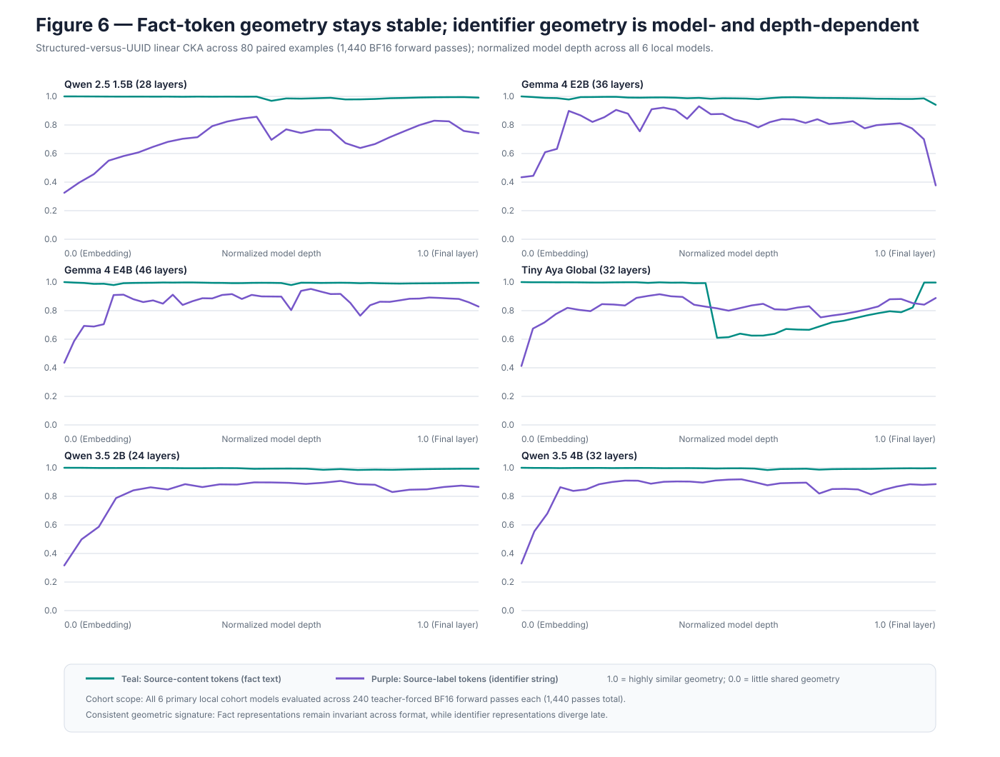

Hypothesis
Unchanged source-fact tokens retain similar geometry, while lexically different identifier and pre-citation spans diverge.
Stage 06 · correlational mechanism
Residual-stream activations are captured for the same semantic examples under structured, compact-random, and UUID renderings, then compared across normalized depth with Linear CKA.
Result in one line. Five of six architectures pass the operational geometry gate; Tiny Aya remains mechanistically eligible but has no clear Stage 7 gate.
Behavioral differences could reflect damaged passage semantics, late output reconstruction, or a binding state between them. Comparing span-specific geometry narrows the possibilities.
Unchanged source-fact tokens retain similar geometry, while lexically different identifier and pre-citation spans diverge.
Low fact CKA throughout depth would suggest representation-wide semantic disruption rather than localized identifier behavior.
Temporal and entity-resolution cases at 15 and 20 sources are rendered three ways. Residual states are segmented into source label, source fact, question, pre-answer, answer, pre-citation, and citation spans.
Linear CKA compares relationships among examples and is invariant to orthogonal rotation and isotropic scaling.
Fact CKA ≥0.90, label gain ≥0.10 over embedding, and final question-minus-pre-citation cosine gap ≥0.05.
Official checkpoints run in native BF16; tokenizer spans are aligned within each paired format.
Answer and citation NLL deltas complement geometry but are reported separately.
models proceed from the operational signature
six models × 80 cases × three formats
hooks and no-op intervention verified
| Model | Label CKA L0 → peak | Min fact CKA | Final question / pre-citation cosine | Gate |
|---|---|---|---|---|
| Qwen 2.5 1.5B | 0.325 → 0.858 (L13) | 0.969 | 0.999 / 0.828 | proceed |
| Gemma E2B | 0.434 → 0.931 (L15) | 0.941 | 0.994 / 0.825 | proceed |
| Gemma E4B | 0.435 → 0.952 (L25) | 0.979 | 0.991 / 0.497 | proceed |
| Tiny Aya | 0.413 → 0.915 (L12) | 0.610 | 0.990 / 0.435 | no clear gate |
| Qwen 3.5 2B | 0.316 → 0.908 (L16) | 0.985 | 0.998 / 0.779 | proceed |
| Qwen 3.5 4B | 0.330 → 0.919 (L17) | 0.984 | 0.998 / 0.733 | proceed |

High CKA means the geometry among examples is similar. It does not mean individual vectors, outputs, or causal circuits are identical.
Five models preserve source-fact geometry while likelihood effects vary in sign. Tiny Aya diverges at the fact-geometry gate and shows a positive citation-NLL penalty. The cross-architecture pattern argues against one universal literal-copying explanation.
The mechanistic search should target identifier and citation trajectories, while retaining architecture-specific counter-results rather than assuming UUIDs globally corrupt encoded facts.
CKA cannot establish which state causes a citation, and teacher forcing differs from free generation. Tiny Aya is no longer excluded: checkpoint revision af89d219…, residual capture, no-op intervention, and layer positions are recorded; its failed operational gate remains visible.
A high-similarity representation is not proof of a shared algorithm, component, or causal circuit. Closed frontier APIs are ineligible because hidden activations and architectural hooks are unavailable.
results/analysis/stage6_cross_model_synthesis.mdresults/analysis/stage6_*.mdresults/processed/stage6_*.jsonresults/activations/stage6_*/results/audit/mechanistic_eligibility_report.json